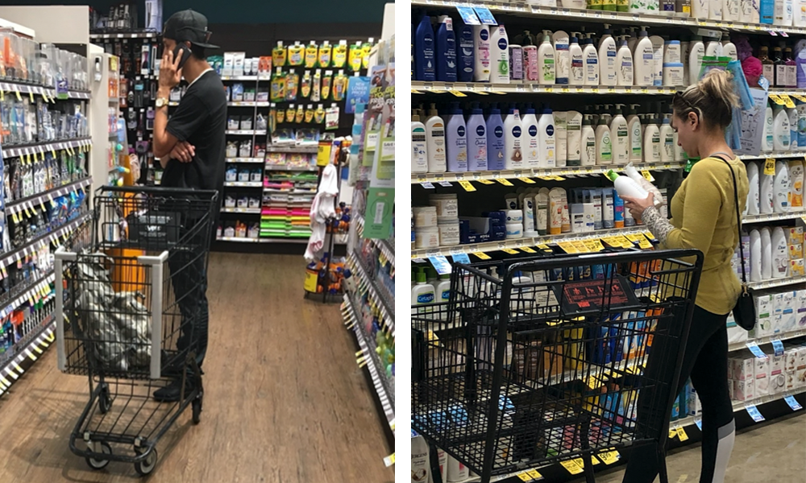
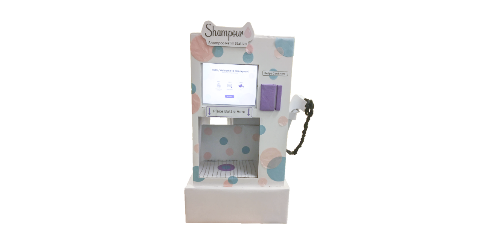

GOAL
ROLE & SKILLS
Design an interactive kiosk that leverages physical interaction with users and
objects to create an experience that is intuitive, consistent, and reliable.
Timeline: April 2019 - June 2019
Product Designer
Product Design, Research, UI/UX Design, Prototyping,
Interaction Design, User Testing
Project Summary
The goal of this project is to design an interactive kiosk that leverages physical interaction
with users and objects to create an experience that is intuitive, consistent, and reliable, as well as thoughtful and
delightful in its implementation. The focus is to choose a context where people currently need to wait in line to see
a human service provider, or where physical interaction with objects or users can enable whole new kinds of user
experiences. My team decided to delve into the context of the retail setting. To be more specific, a shampoo refill
kiosk that would help solve the problem of plastic pollution.
Research
First, we did online research to support and make a stronger case for our kiosk goal. We researched a couple of refill
kiosks that are currently available on the market to examine the current limitations and frustrations that customers encounter.
- More than 552 million shampoo bottles could end up in landfills every year — equals 1,164 football fields.
- 50% of people in the US don't recycle shampoo bottles.
- Shampoo bottles are one of the plastic waste with high-density polyethylene type (HDPE) — which is
non-biodegradable and can take centuries to decompose.
- Some companies make shampoo bottles from ocean waste.
- There is a couple of existing refill kiosk — one of them is called EcoPod. However, they only sell their brand product.
Observational Findings
To better understand people's shampoo buying habits, we did observations at a couple of grocery stores like Vons and Ralphs.
- Some bought products for their family or significant other. We saw that a couple of people were on their phones
talking with someone else to get more details on which product they should buy.
- People tend to spend about a few minutes (around ~5-ish minutes) while choosing toiletries, even if they
already know which product they want to buy.
- A couple of people walked back and forth along the aisle to get a scope of the choices. After that, they would
compare a couple of the available options.
- Some people have a particular brand they want to buy. Meanwhile, some browse across brands and scents.

Interviews
Since the data that we have gathered from observations are our interpretation based on what we
saw people are doing, we wanted to confirm by interviewing a couple of people. So we came up with a list of questions
and came back to the grocery stores a week after the observation to find a couple of people in the shampoo alley for
a short interview.
Below are a couple of our findings:
- Most people consider price when choosing a product.
- 50% of our interviewees recycle their bottles.
- Open to trying new brands or scents. However, most of the time would stick with their preferred brands.
- Most people purchase toiletries for themselves.
Kiosk Prototype
The kiosk prototype went through 4 stages of implementation in total.
We added a few minor details along the way to make it look as close to a real-life kiosk.
- On the right side of the iPad slot, we created a credit card swiper made from cardboards.
- The bottom alcove is where the dispenser is located. It's where the customers are supposed to put the bottle to get their refill.
- On the right side of the kiosk is the nozzle that serves as an alternative way to fill up the bottles. We think this
will be a convenient alternative way to refill, especially if the bottle brought by customers doesn't fit the bottom alcove.

Style Guide
Referring back to the theme we created on our mood board, we used pastel pink, blue, and purple as our color
selection. For the font, we chose to use Karla which fits our theme perfectly — simple and bubbly. On the top is the logo that we
made on Adobe Illustrator. The font used on our logo is also Karla with a soft pink shampoo droplet on the right side.
Wireframes
Below are a couple of the main wireframe screens. You can view the whole flow of the wireframes
here.
Usability Test
In general, users found the Shampour kiosk intuitive and easy to use. There were a couple of issues that
need to be addressed in our next iteration. We also added a couple of extra steps to make the experience smoother. Below are the
feedbacks and problems that we have found during testing.
User testing 1:
- Some users were not sure when they should place a bottle under the dispenser. To solve this problem, we added a pop-up
that informs users to place their bottle under the alcove after they make a selection.
- Users want the ability to set desired refill volumes for an easier experience.
User testing 2:
- Suggestion to add grating or something simulating it to show that if there were to have any spillage, it won't be an issue.
- Some users suggested adding a scent option to our filter options. However, considering that different brands might have
different formats of scent names — which doesn't always reflect the ingredients — it would be hard to make scent as a
category. For this reason, we didn't add a filter based on scents.
- Some users who chose the nozzle refill method found the 'Fill in your bottle with the nozzle on the right' pop-up confusing.
We expected them to click the continue button on the pop-up but some users only wait for the product to be dispensed after
taking the nozzle without clicking the continue button. So we changed the wording to “Pick up the nozzle on the right”,
removed the continue button, and add a timer so that the pop-up will disappear after 3 seconds. Then the customer could start
filling their bottle.
- Some users wish to have a search bar. This functionality will help people that already have a specific product in mind.
- Some users wish to have a price filter to accommodate their desire to compare products prices. We then added the
functionality to filter products by price range on the next iteration.

Mockups
The final mockup reflects all of the adjustments we made based on the feedback we got from our usability
testing. One of the changes worth noting is that we switch the order of steps when users need to swipe their card as a payment
method. In our early wireframes, user can dispense their product first before swiping their card for payment. We realized that
this is a flaw from the business perspective as it depends heavily on honesty and trust — users can get away without paying
after getting their refill. That is why we adopt the vending machine system where the user needs to swipe their card first —
the system will save the method of payment — then the user can dispense the shampoo they have selected.
Below are a couple of the final mockup screens. You can access the full prototype
here.
Results and Takeaways
We are so proud of our final implementation of this project. Through this project, I have learned that
great design starts with the genuine intention to understand our users. Through user research and effort to truly understand
our target users, we can find the market gap that could differentiate our product from the other existing products on the market.
Another thing that I had learned while working on this project was the importance of conducting usability testing in between
each step. At the very least, do one user testing using a lo-fi prototype and another with a hi-fi prototype before moving
forward to development. The goal is to check and recheck if we overlooked anything crucial and if the overall product is intuitive
for our users.